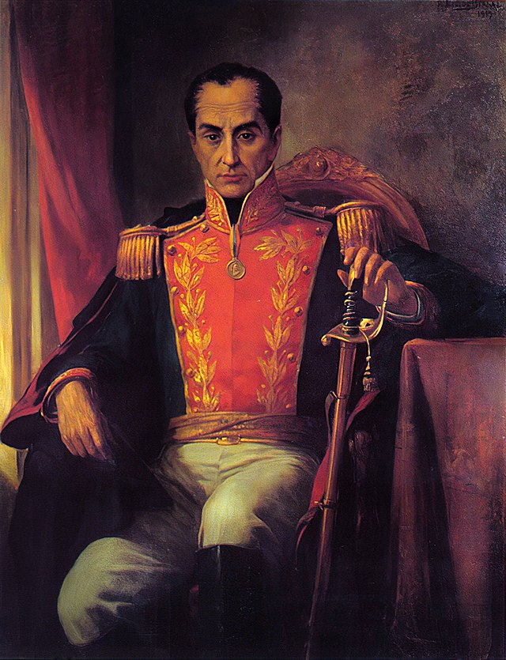

Introduction
Outside of Latin America, not many people know of Simón Bolívar. But, as we learned in our article about Carl Mannerheim last week, such global unfamiliarity does not mean that such figures lack historic impact. Quite the contrary: Simón Bolívar led several Latin American countries to independence from Spain. This liberation from European colonization has granted Simón the nickname 'El Libertador'. Let us discover how Bolívar's life contributed to these declarations of independence while learning about his personal life too.
Early Life
Simón Bolívar (1783-1830) was born in Caracas, a city that lies in modern-day Venezuela. At the dawn of his adulthood, he joined a military academy. After some time practicing military studies in Madrid, Bolívar went to France in 1804. During his exploration, he picked up ideas from the Enlightenment and was especially inspired by the characteristic Enlightenment notion of a people's right to sovereignty.
When Simón returned to Venezuela after 7 years in Europe he started manifesting the Enlightenment ideas and achieved to overthrow the government in 1810 through a coup d'état with the help of fellow revolutionaries. He and others banished the reigning Spanish colonizers and established their own seat of power.

A portrait of Simón Bolívar
Consolidating independence
After achieving a foothold in parts of Venezuela, Bolívar went on to 'liberate' other Latin American regions. These included some Caribean islands at first, but soon concerned larger colonized areas too. What was characteristic for Bolívar's campaign, is that he laid an ultimatum for any Spaniard: those who did not actively support independence were free to be killed. This is known as the Decree of War to the Death.
During the many years of independence warfare, several major battles occurred. The battle of Boyacá is one such example. It coincides with the strive for New Granadan independence and was preceded by a daring journey over the Andes mountains; the geographic variety of Northern Latin America was a recurring obstacle in these campaigns.
Through overcoming these obstacles and achieving victories on the battlefield, Bolívar finally occupied Caracas, the capital of Venezuela and became president of the country.
Venturing further
Bolívar did not stop at the independence of Venezuela. He instead pushed on towards Ecuador, Peru and other regions of South America from 1822 onwards. Bolívar's wish was to unite the Spanish regions and achieved that to some extent, but as much as he wished. He could not unite Gran Columbia into a highly interconnected and cooperative region. What he did achieve, is that he inspired many natives to rebel against the Spanish occupiers.
Legacy
Through these efforts and inspirations, Bolívar received much fame; not just at the time, but also in the current day. When Chávez gained power, he amassed mass popularity by blaming foreign powers for the struggles that Venezuela experienced. It connected with an apparent culture of discontent against any nation that has influence over their native country. Some people say that, indeed, the popularity of Chávez links itself to the cultural concept of Bolivarianism.
And it is true as well, that Chávez used Bolívar as an example in his political campaigns. He issued national reforms and sought to improve Venezuela's grip on its own rich oil reserves. You could even go on and argue that the pink tide movement links to this Latin discontent against usurpers, but that requires an article in itself. For now, we have learned how Bolívar's biography tells us something about Latin American cultural roots, but also tells the story of how it overcame its colonizers.